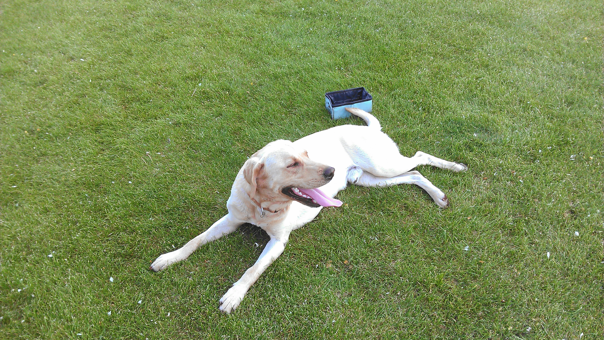

Daily Babble
Saturday April 1, 2017
Dog Catches Pop Fly at Local Softball Game
by Jacob Williams
jacob2.williams@umconnect.umt.edu
Just this Friday, on March 31st, a dog sprinted out into the softball fields at the city complex, during a local softball game in Helena, MT. Bear, the young Labrador retriever who ran into the field, then caught a pop fly ball falling in midair.
"It was the most hilarious thing I saw Bear do." said Tamara Williams, one of Bear's owners. "I was holding onto him with a leash when the gate to the field suddenly opened. Then his leash snapped after he gave a strong tug, and he just sprinted out there and caught the ball in his mouth like it was nothing!" Tamara also stated that playing fetch with a ball is one of Bear's favorite activities, which might explain why he ran in to catch the ball.
Allison Williams, a freshman at Carroll College and Tamara's daughter, was playing for the college's softball team during that time. Allison was also the player who pitched the pop fly that Bear ran out and caught. "I've been through many exciting things during my softball career," said Allison, "though I never really expected this. If only Bear was actually playing with us, he could've gotten that batter out for us. Haha!"
Fortunately, the game resumed as scheduled. Though Carroll lost, 4-2, the spectators found this phenomena as one of the most "bear"-able moments in softball history. - Helena, MT
Bear Attack!
